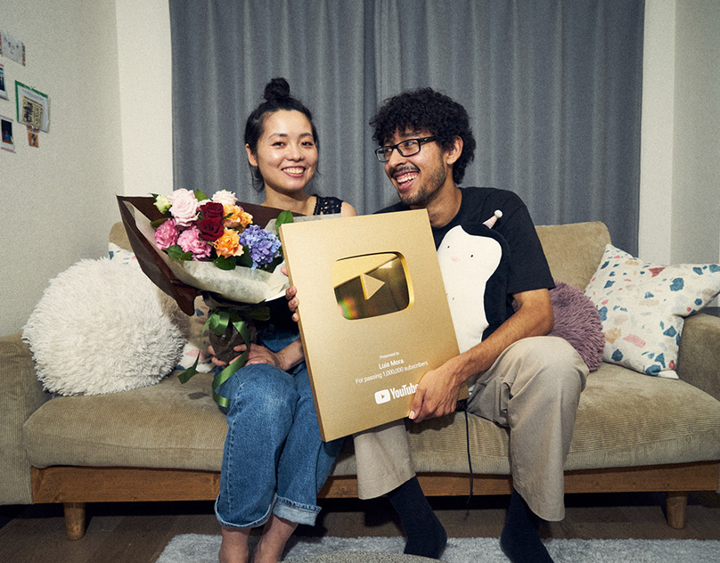

Who is Luis Mora?
Luis Mora is from the small town of Nevada where he dreamt his whole life of one day moving to LA (Los Angeles). In his Final year of high-school he has stated that he was in the most depressed part of his life. Where he struggled in school and struggled to fit in. He skipped his graduation to go skating with a friend he hadn’t seen in years and that was Ryan Librada. He told him about how people were making skating videos of all their best tricks. This interested Luis Mora to the point where he started to do it himself where he started to gain attention. A while after his graduation he moved to LA to begin his dream which was now to make skating videos. It wasn’t easy, but he got attention from other skating Youtubers who liked the way he shot his videos and he helped them. All the people who said they were his friends turned on him after this. At the time Youtube wasn’t enough money to pay for rent and food. He ended up living in his car or with a friend and when he went out to make videos he rarely ate unless his friends shouted him food. He tried getting a normal job but he wasn’t able to last a week at any of them. He finally had his break when his videos started going viral. With this money he was finally able to get a stable roof over his head. After a year he decided to take a trip to Japan with his friends as he was a massive fan of anime such as Inuyasha, Yu Yu Hakusho and Tokyo Ghoul. Once he came back from Japan he went back to Nevada where he planned to move to Japan. Once he moved to Japan he started making skating videos which got a lot of attention. He would later on start the Erased Project with Edwin Acuna, his business partner. He would then get married to his Wife Masumi. They would then move back to LA where he started Syndicate Studios for his Friends to achieve their dreams.
